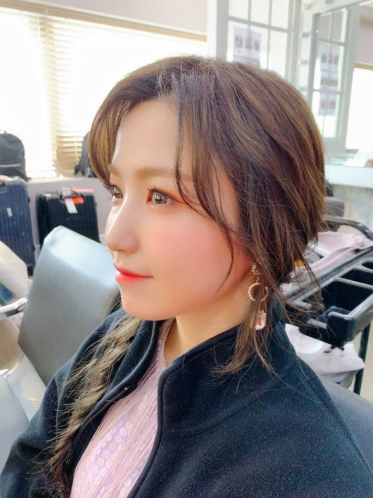
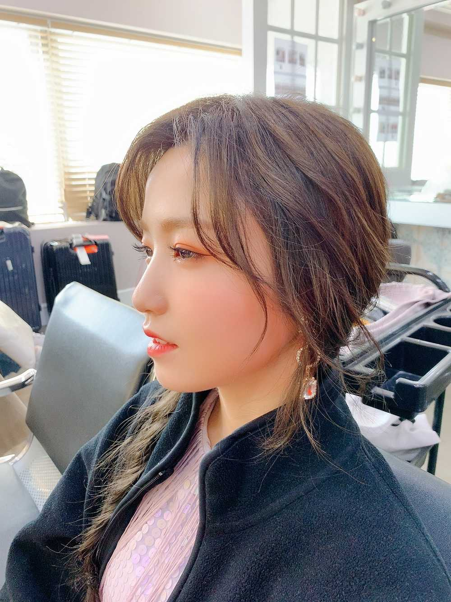

こんばんは🌙
ひいだよ🍓
ひいだよ🍓

MVオフショット📸
横顔ひい🙂
寒すぎたのでメイクさんの
上着をお借りしました😇笑
私のシーンでは
たくさんのグラスに囲まれてました🍷
あれぜーーんぶ本物で
セッティングするのに1番って言っても
過言ではないほど時間かかったと思う。。
本当に感謝です😣
そして紫色の飲み物に飴みたいなの入れたのも
ひいだよ〜🍬
あの液体飲めないみたいだけど
フルーツのいい香りがしたなあ〜😊
綺麗に飴ちゃん入れるの難しくて…
スローで撮ってるから綺麗に入るまで
何回も撮り直した！！
そんな裏話がありましたとさ〜っ👍🏻
あ。そうそう！
みんな結構今回の髪色褒めてくれるよね🤗
うれしいありがとうううう🧡🧡
ベースの色はピンクブラウン🌸
でもひいはブリーチしすぎたせいで
すぐに色が抜けてしまった😣
ブリーチしてるところってすぐ
緑系の色になっちゃうんだよね〜😵
エクステも可愛いでしょ😍
ビジュアル先生とたくさん悩んで決めました🙋♀️
実はピンク1色だけでは
ないんだよ😏にやっ
いろんな色混ぜてみました〜っ
当ててみて🤗（難易度高すぎる）
最近韓国ではエクステ流行ってるみたい😳
たしかによく外歩いてても見かける！！
染める勇気出ない〜って方とか
髪の毛傷むの怖い〜って方とかには
オススメです💡
それじゃあまた〜っ
오늘은 어제보다 덜 추워서 다행이다 그쵸??
그래도 춥긴 춥다🙂ㅋㅋㅋ
짜파구리 먹어본적이 있는 분이
생각보다 많아서 놀랐네ㅎㅎㅎ
근데 만든게 좀 어렵겠다...
누군가 대신 만들어주시면...😀ㅋㅋㅋㅋㅋ
아 꾸라언니가 기생충 봤다고 들었는데 진짜요?!
언니 어디서 봤어요ㅜㅜ
저도 같이 보고싶었는데😭
라고 꾸라언니한테 전해주세요😊
((너가 직접 말해))←ㅋㅋㅋㅋㅋ
그리고 이제 피에스타 응원범 외웠어요??
이번에 1명씩 이름을 부르는 부분이 있어서 너무 좋아요🤗헤헷
요즘 밥 잘 먹고 있죠??
저녁 맛있게 먹어용🍚💕

ちょっと大人っぽいバージョン😏
이호は
どっちが好きですか〜？
ばいばーい👋
ひいまる🥟